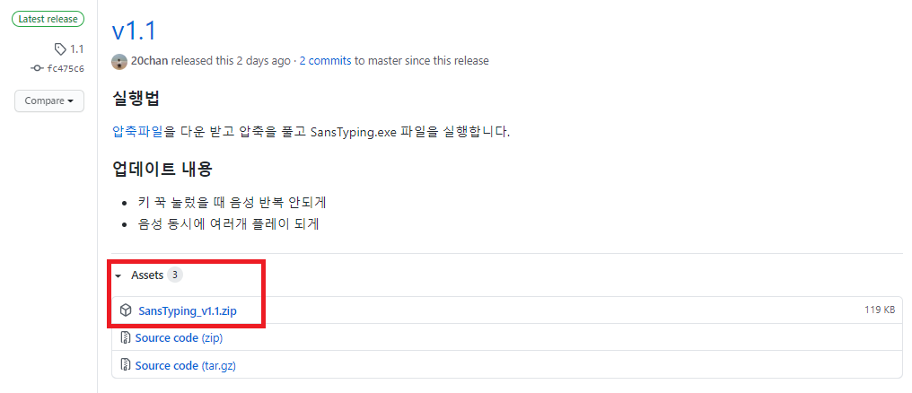
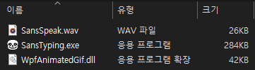

샌즈와 함께 골 때리게 개발을 해보자 - 20chan/SansTyping
겁 나 어 렵 습 니 다

오늘의 레포
오늘 소개해드릴 레포는 SansTyping입니다!
C#으로 제작된 이 프로젝트는 토비 폭스가 제작한 롤플레잉 비디오 게임인 언더테일의 캐릭터 샌즈가 타이핑을 할 때마 샌즈 목소리로 말을 해주는 20chan님의 레포입니다!
재밌는 아이디어로 제작된 이 프로그램을 저는 혼자 개발할 때 powermode 플러그인과 함께 사용하고 있습니다
설치해보자
먼저 깃허브의 릴리즈 탭으로 들어갑니다
그 다음 SansTyping_v1.1.zip(현 시점 최신버전) 압축파일을 받아줍니다.

파일 구조는 이러합니다

압축을 풀고 SansTyping.exe 파일을 실행합니다.
샌즈와 함께 골 때리는 개발을 즐겨보세요 :)